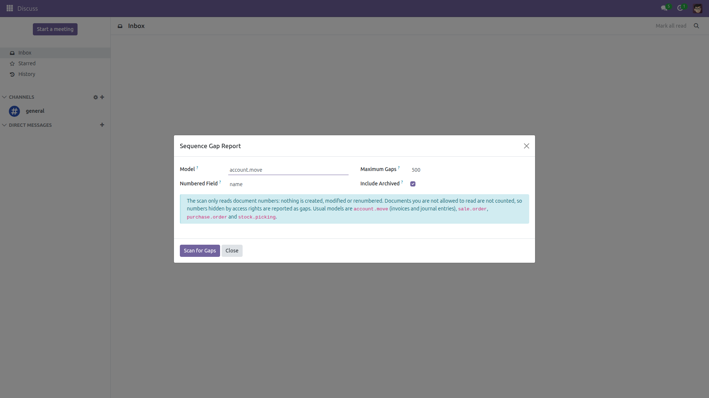
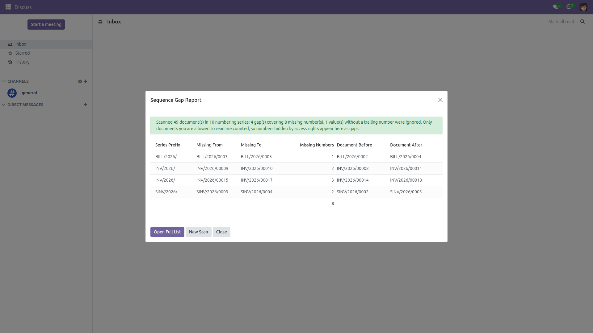
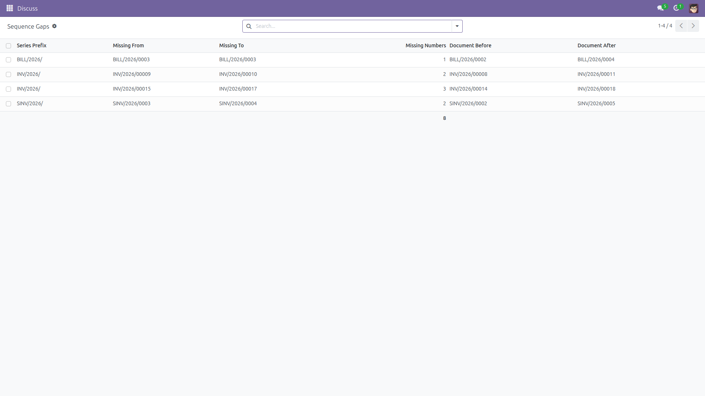

Why is invoice 00042 missing? Now you can answer.
Odoo sequences leave holes: a deleted draft, a discarded order, a cancelled entry, and the numbering jumps. Auditors and tax authorities ask about every one of them, and Odoo offers no way to find them. This module adds a read-only wizard that scans any numbered field of any model and lists every missing number, series by series, with the documents that sit just before and just after the hole. Free and open source (LGPL-3), Odoo 14.0 through 19.0.
account.move), sales orders, purchase orders, transfers, or any other numbered document. Nothing to configure, no dependency on Accounting.INV/2026/00042), so every numbering series is analysed on its own and never mixed with another.
Pick the model and the numbered field — invoices and journal entries by default — and press Scan for Gaps.

Every missing number, grouped by numbering series, with the documents on both sides of the hole and a one-line summary of the scan.

Open the full list to sort, filter, group and export the gaps for the auditor's file.
sequence_gap_report folder into your addons directory.base module is required, so it installs on any database.account.move / name; type any other model and field if you scan something else.account.move, sale.order, purchase.order, stock.picking, …) and the field holding the number, usually name.Identical behavior on every supported series (14.0 – 19.0).
Questions, bugs or feature requests?
Email f.ashraf.dev1@gmail.com — I read and answer every message.
License: LGPL-3 · Source on GitHub · Issues and contributions welcome.